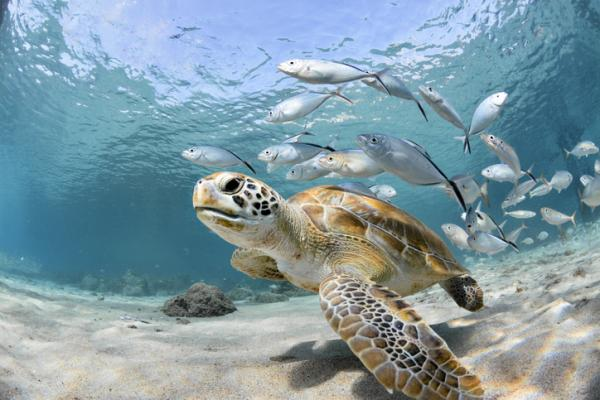
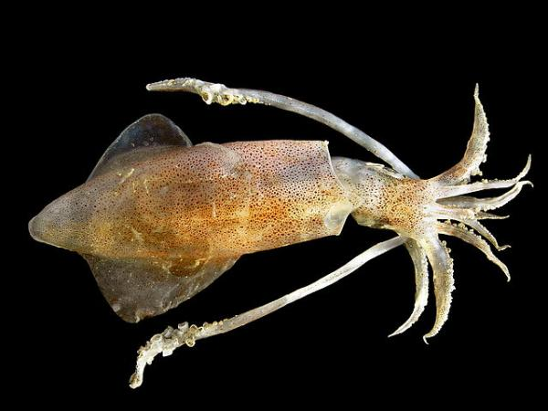
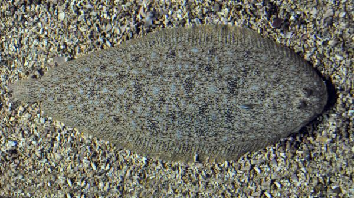
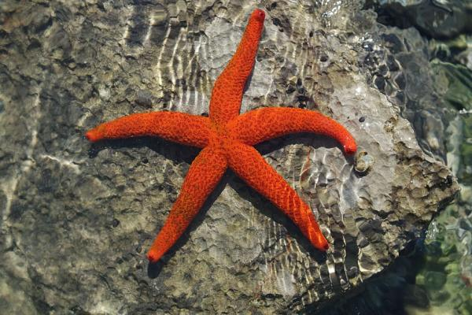
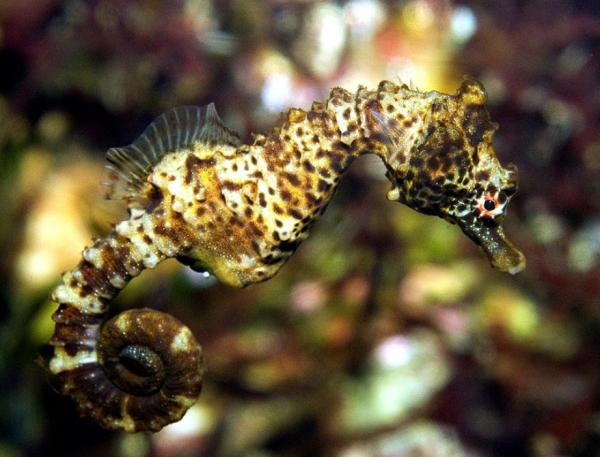
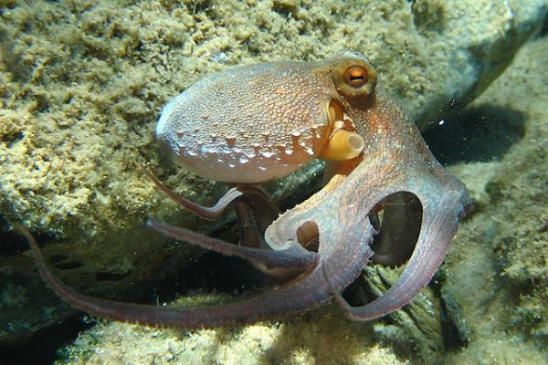
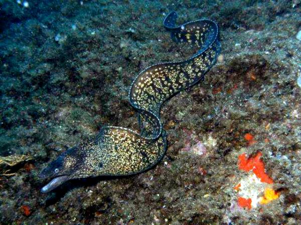
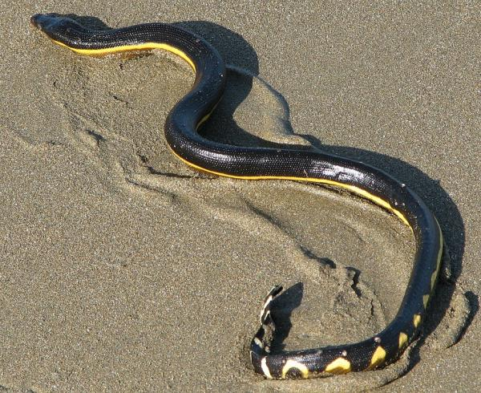

OCEANA
Protegiendo Los Océanos Del Mundo
¿Qué tipo de animales salva está corporación?
Clasificación de animales
| Tortugas marinas |
Calamar |
Lenguado común |
Estrella de mar |
| Caballito de mar |
Pulpo  |
Morena |
Serpiente marina |
Lista de Utiles Ordenada
Animales del mar
- La raya jaspeada
- a foca monje del Mediterráneo o foca fraile
- La estrella de mar azul
- El pepino de mar
- La gamba roja
Lista de Utiles Ordenada
Animales marinos en peligro de extinción
- El delfín de Maui
- La tortuga verde del Pacífico o prieta
- La tortuga verde del Atlántico o tortuga blanca
- Los corales marinos
- La tortuga lora
Lista de Definiciones
Algunos de los animales marinos son:
- La esponja
- son animales muy antiguos y sencillos. A pesar de que no pueden moverse, toman oxígeno y su alimento del agua.
- Los Gusanos
- tienen el cuerpo blandito y tienen forma alargada. Sin patas y sin esqueleto. Fueron los primeros animales que tuvieron cabeza.
- Los Equinodermos
- como la estrella de mar o los erizos, tienen la piel espinosa.